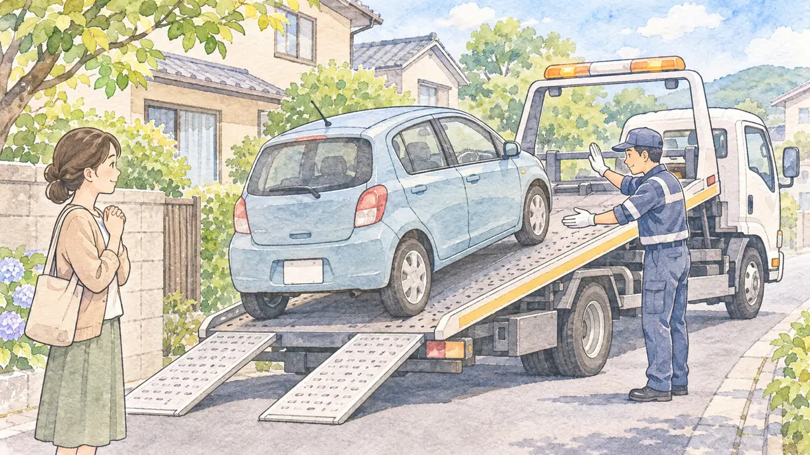
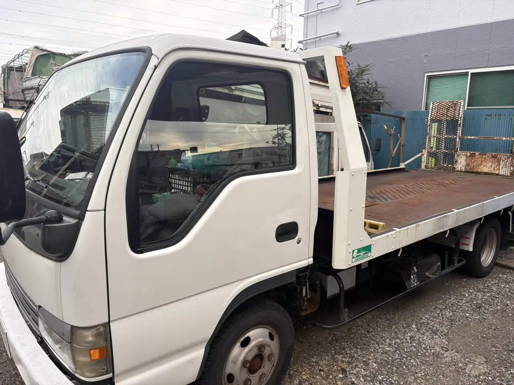

動かなくなった車を運ぶ方法で迷っている方へ
動かない車を運ぶには？
レッカーと積載車の違いと、費用で損しないための確認ポイント
公開
こんにちは、東京都足立区江北で自動車解体・廃車買取をしている「大崎商店 環七店」です。
「車が動かなくなった。どうやって運べばいいの？」
「レッカーを頼むと、いくらかかるのか分からない」
「廃車にするつもりなのに、先にレッカーを呼んでもいいの？」
動かなくなった車を運ぶとき、どこに頼むか、いくらかかるか、どこへ運ぶかで、迷う方は多いです。この記事では、動かない車を運ぶ方法と、レッカー代で損をしないための確認ポイントを、やさしくご紹介します。後半では、足立区の大崎商店の場合もご案内します。
事故の直後の対応（安全の確保・警察・保険会社への連絡）は、事故を起こして車が動かないときの対応の記事をご覧ください。
① 動かない車を運ぶ方法は、おもに4つ

| 運び方 | どんな方法？ | 費用の考え方 |
|---|---|---|
| 任意保険のロードサービス | 契約している保険会社に連絡して、レッカーを手配してもらう | 保険料にふくまれている場合がある。距離や条件の範囲内なら、自己負担なしで運べることがある |
| JAFなどのロードサービス | けん引・搬送などの救援を依頼する。JAFは非会員でも有料で利用できる | 会員は会費を負担しており、条件の範囲内で無料になる。非会員や無料範囲を超える作業は有料。利用条件は依頼先に確認 |
| 自分でレッカー業者を探して頼む | インターネットや電話帳などで探して、手配する | 保険等の対象外なら、原則として自己負担。保険会社に連絡せず手配すると、対象外になる場合がある。距離や車の状態で金額が変わる |
| 引き取りを行う業者に頼む | 廃車・買取をする業者が、車のある場所まで引き取りに来る | 業者によって異なる（無料で引き取る業者もある） |
JAFの公式料金表（一般道・故障車のけん引・税込。2026年11月6日に確認）では、会員は、けん引が20kmまで無料で、20kmを超えると1kmごとに830円です。非会員は、基本料（昼間15,700円・夜間19,630円）に、1kmごとに830円のけん引料がかかり、昼間のけん引の目安は27,700円からとされています（作業料・部品代・燃料代などは別）。個人会員の費用は、入会金2,000円と年会費4,000円です。料金は改定されることがあるため、最新の内容はJAF・ロードサービスの料金を調べるでご確認ください。
保険やJAFに入っていれば、すでに保険料・会費を負担しているので、まず使えるサービスを確認しましょう。ただし、どんな搬送でも追加負担なしになるわけではありません。距離・作業内容・運び先などで、対象外や自己負担になる場合があります。
加入していない場合も、JAFへの有料の救援依頼など、複数の方法があります。依頼前に、料金と支払い方法を確認してください。
② 「レッカー」と「積載車」は、何が違う？現場で変わること

動かない車を運ぶ方法には、車の一部をつり上げて引っ張る方法（けん引）と、荷台にのせて運ぶ方法（積載車）があります。どちらが適しているかは、車の構造・故障や損傷の状態・現場の状況によって変わります。搬送方法は、依頼先に判断してもらいましょう。
- 積載車に、のせられるか
- 自走はできないが、人が押して動かせるか
- タイヤが回らない、ハンドルが切れないなど、通常の方法では動かせないか
- 特殊な機械や道具が必要か（水没や、事故で壊れた車など）
- 使う道具と、作業の人数
- 道の広さ（大きな車が入れるか。狭い道や、右左折ができない道は難しい）
車を無理に押したり引っ張ったりせず、分かる範囲の状態を伝えてください。
料金は、こうした条件で変わるため、現場を見ないと分からない面があるのは、事実です。ただし、料金表が示されないと、依頼する側は、分かりにくいものです。だからこそ、依頼する前に、次の点を聞いておくと安心です。
③ レッカーを頼む前に、確認したいこと
依頼先によって、料金や対応は異なります。次の点を、確認しましょう。
- まず、加入している保険会社・JAFなどに連絡：使える範囲（距離・運び先・自己負担）を確認します。保険会社の指定窓口に連絡せず手配すると、対象外になる場合があります。修理工場などへ運んだあとの2回目の搬送や、廃車目的の搬送が対象になるかも確認しましょう
- 何によって、料金が変わるのか：距離、車の状態、作業の内容、時間帯（夜間など）
- 見込みの金額の幅：「現場を見ないと分からない」と言われたときも、だいたいの範囲と、追加料金がかかる条件を聞きます
- キャンセル料：現場に来たあとにやめたとき、かかるか
- 見積もりを、書面やメッセージで残せるか
- ほかの業者にも、聞いてみる：保険に入っていない場合は、複数の業者に相場を問い合わせて、比べましょう
静岡県は、大雨で水没した車の移動を、インターネットで検索した業者に頼み、請求が約30万円になった例を紹介しています。 業者は、事前に費用を示さず、「現場に行かないと分からない」と説明していました。県は、検索結果の上位に出ていても、信用できるとは限らないとして、依頼前に、費用・作業内容・キャンセル料を確認するよう、案内しています。困ったときは、消費者ホットライン188（最寄りの消費生活相談窓口）に相談できます。
④ 運び先を決める前に、確認したいこと
「購入したお店に、レッカーで運べばいいだろう」と考える方は、多いです。ただ、運んだあとに、思わぬ費用がかかることがあります。
- 買い取ってもらえない場合がある：購入先での買取・引き取りの可否は、損傷や故障の内容、車種、お店の基準などで変わります。事故の損傷が大きく、対応が難しい場合もあります。レッカーが必要かどうかだけでは判断できないため、運ぶ前に車の状態を伝えましょう
- 処分代や、保管料を請求される場合がある：買取できず、処分となると、費用がかかるお店もあります
- 運んだあとに断られると、レッカー代だけが残る：さらに、別の場所へ運ぶ費用が、必要になることがあります
運ぶ前に、運び先へ、次の点を電話で確認しましょう。
- この車を、受け入れてもらえるか（修理の見積もり、買取、引き取りのどれか）。搬入できる日時も確認します
- 買取が難しいときの、処分代の有無と金額
- 保管料がかかるか。いつまで置いてもらえるか
車を処分する前提なら、レッカーを呼ぶ前に、廃車・買取の業者へ、相談する方法もあります。事故の保険金を請求する場合は、売却や解体の前に、保険会社へ車の確認が済んでいるかも確かめてください。次の「大崎商店の場合」を、ご覧ください。
⑤ 大崎商店の場合

ここからは、足立区の大崎商店の場合をご紹介します。
車を処分する前提なら、先にお電話を
大崎商店では、積載車にのせられる車は、引き取り手数料をいただきません（足立区内は、引き取り無料）。別にレッカーを手配する費用を、省ける場合があります。また、大崎商店では、車の「処分代」という費用は、いただいていません。車の状態に応じて、買取、または、無料の引き取りになります。
- 足立区内は、引き取り無料です
- 足立区外で、買取価格がつかない車は、環七店から車で片道約30分圏内は、引き取り無料です。圏外は、所在地と車の状態を伺って、事前にご案内します
- 解体費用・手続き代行費用・印紙代は、別請求しません
- 無料の範囲や条件は、場所と車の状態をお聞きして、事前にご案内します
- 車のお持ち込みは、どこからでも歓迎（基本は環七店。日時は、事前にお電話でご相談ください）。動かない車の搬入先は、下記の入谷店をご案内します
動かない車も、ワイヤーで積み込めます
大崎商店の積載車は、自走できない車や、通常の方法では動かせない車も、ワイヤーで荷台に引き上げて積むことができます。レッカーでけん引して運ぶ場合と同じように、動かない車の引き取りに対応しています。ただし、積載車が入れない細い道や、積む場所がないなど、現場の状況によっては、お断りすることがあります（追加の費用は、いただきません）。車の状態と場所を、事前にお電話でお伝えください。
先にレッカーで運んだあとでも、ご相談ください
購入先などへ、レッカーで運んだあとに、買取ができなかった場合や、修理費がかさんで廃車にすると決めた場合は、大崎商店が、その運び先まで、引き取りに伺うこともできます。この場合も、確認ずみの無料範囲・条件内であれば、引き取り手数料はかかりません。区外は、場所と車の状態を伺って事前にご案内します。くわしくは、事故を起こして車が動かないときの対応の記事もご覧ください。ただし、ご自身で手配したレッカー代は、お客様のご負担で、大崎商店から払い戻すことはできません。保険等の対象になるかは、ご契約先へご確認ください。運ぶ前に、一度お電話いただくのが、いちばん安心です。
入谷店へ、直接運んでいただくこともできます
動かない車は、事前に日時をご相談のうえ、レッカーで入谷店へ直接搬入していただくこともできます。引き取りのご依頼は、環七店へのお電話がスムーズです。入谷店は、月〜土 9:30〜17:30、日曜・祝日・第2土曜はお休みです。
引き取りに伺えるかどうかは、状況次第です
大崎商店の積載車は、1台です。従業員も少ないため、複数の引き取りを、同時には行っていません。
- すぐに伺えるかは、すでに仕事が立て込んでいるかどうかで変わります
- 「当日すぐに」というご希望で、仕事が立て込んでいないときは、入谷店からの距離が、到着の目安になります
- 日時は、お電話で、事前にご案内します
- 積載車は大きいため、細い道や、細い道からの右左折が必要な場所には、入れません
- 現場で、積載車にのせられないと分かった場合は、お断りすることがあります。追加の費用は、いただきませんが、お客様のお時間が無駄になってしまうため、お電話で、できるだけ詳しくお伝えください
お電話のときに、教えてください
- 車種・年式・車の状態：自走できるか、押して動かせるか、まったく動かないか
- 車のある場所と、道の広さ：細い道か、右左折できるか、積載車を停められるか
- 地下や立体駐車場の場合は、入口の高さ
- 鍵があるか
- 車検証の情報：所有者・使用者が、お電話いただいている、ご本人か。ローンが残っているか
車検証を、お手元にご用意いただくと、ご案内がスムーズです。くわしくは、エンジンがかからない車でも引き取ってもらえる？、出張引き取りの対応エリアと無料の範囲、廃車の手数料・解体費用・レッカー代は？の記事をご覧ください。
よくある質問
Q. レッカーは、どこに頼めばいいですか？
A. まず、加入している任意保険のロードサービスや、JAFが使えるかを確認してください。使える範囲は、保険会社・JAFによって違います。入っていない場合は、複数の業者に、費用を確認してから頼みましょう。
Q. 自分で呼んだレッカー代は、誰が払いますか？
A. 保険やJAFの範囲外で、自分で手配した場合は、ご自身の負担です。金額は、距離や車の状態、作業の内容で変わるため、依頼前に確認してください。
Q. 廃車にするつもりですが、先にレッカーを呼んでもいいですか？
A. 呼ぶことはできますが、運び先の受け入れ条件や費用を先に確認しましょう。廃車・買取業者へ、積載車で引き取れるか相談する方法もあります。大崎商店は、足立区内などの無料範囲・条件内で、積載車にのせられる場合は引き取り無料です。場所と車の状態を、事前にお伝えください。
Q. 購入先へ運んだあと、廃車にすることになったら？
A. その運び先まで引き取りに伺うこともできます。無料範囲・条件内であれば、引き取り手数料はかかりません。受け入れの可否・日時や区外の条件は、お電話でご案内します。先に手配したレッカー代を、大崎商店が負担する形ではありません。
Q. 積載車にのせられない場合は、どうなりますか？
A. お断りすることがあります。追加の費用は、いただきません。細い道や、のせる場所がない場合は、事前にお電話でお伝えください。
Q. タイヤが回らないなど、まったく動かない車でも、積載車で引き取れますか？
A. 大崎商店の積載車は、ワイヤーで荷台に引き上げて積むこともできます。ただし、道の広さや、積む場所など、現場の状況によっては、お断りすることがあります。車の状態と場所を、事前にお電話でお伝えください。
Q. すぐに来てもらえますか？
A. すでに仕事が立て込んでいる場合は、すぐには伺えません。日時は、お電話でご案内します。
動かない車のご相談は、大崎商店へ
電話で相談する 03-3854-4141メールで相談する（フォーム）ご来店の前に、お電話ください。引き取りなどで外出していることもあり、お電話いただければ、受け入れの可否や、ご案内できる日時をお伝えできます。
大崎商店 環七店
電話：03-3854-4141
〒123-0872
東京都足立区江北7丁目1−3
営業時間：月〜土 10:00〜18:00
休業日：日曜・祝日
環七沿い／舎人ライナー
西新井大師西駅
大崎商店 入谷店
電話：03-3899-2837
〒121-0836
東京都足立区入谷7丁目5−11
営業時間：月〜土 9:30〜17:30
休業日：日曜・祝日・第2土曜
引き取りやご相談のお電話は、環七店がスムーズです。お電話の際は、「動かない車の引き取りについて」とお伝えください。
※掲載のイラストはAIで作成したイメージです。実際の店舗・車の様子を撮影したものではありません。積載車の写真は、実際の大崎商店（入谷店）で撮影したものです。
参考：静岡県・大雨被害で車が水没…レッカー代の高額請求トラブルに注意！／JAF・ロードサービスの料金を調べる／JAF・会員でなくてもロードサービスを利用できますか？／JAF・ロードサービスカーの種類／東京海上ダイレクト・自動車保険のレッカーサービス